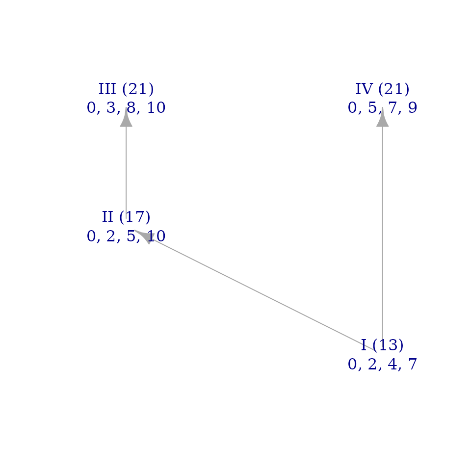
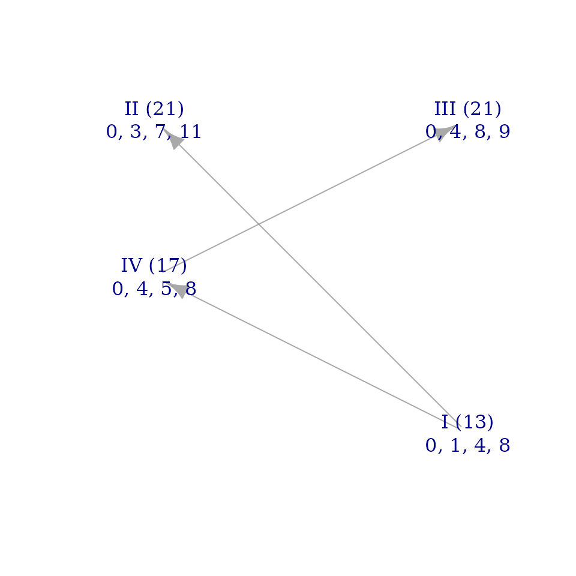
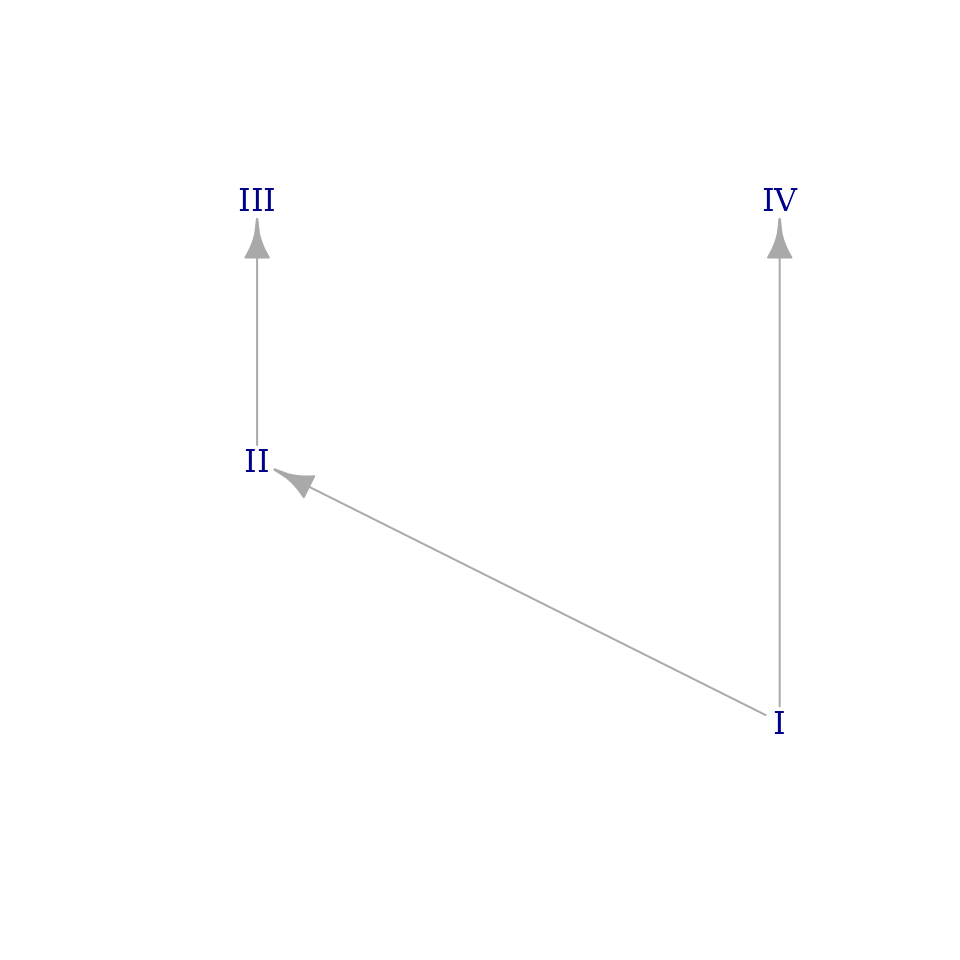
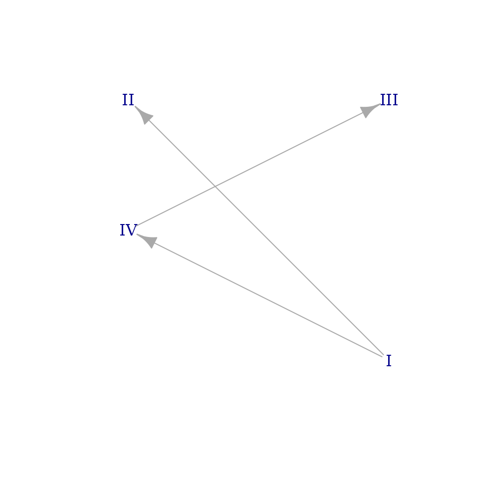
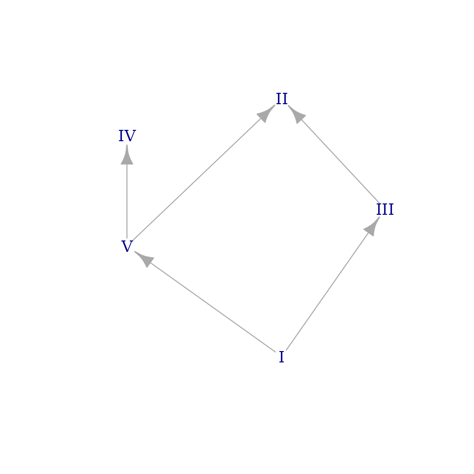
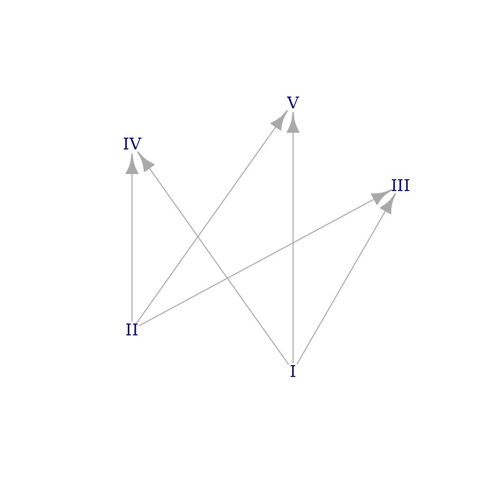
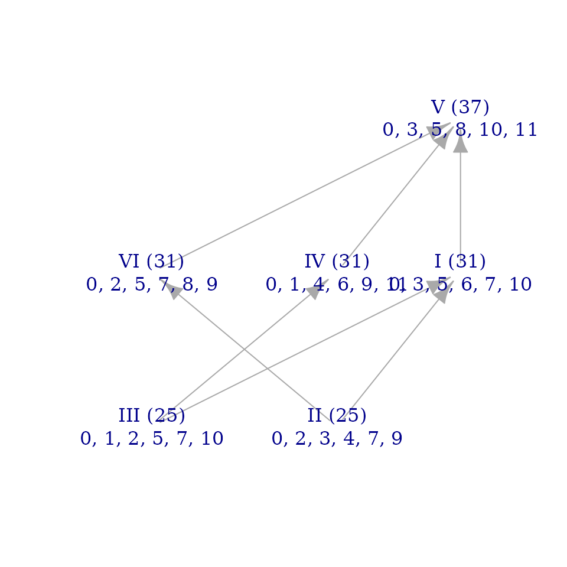
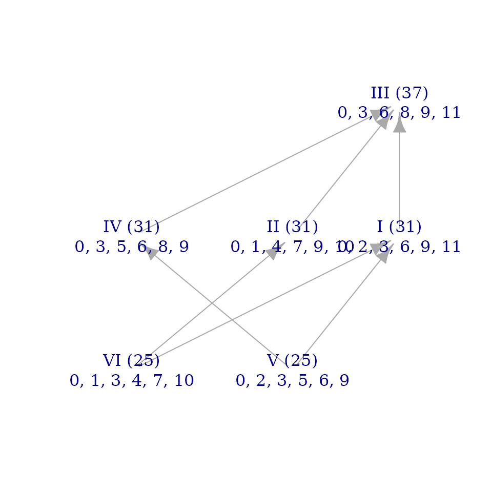
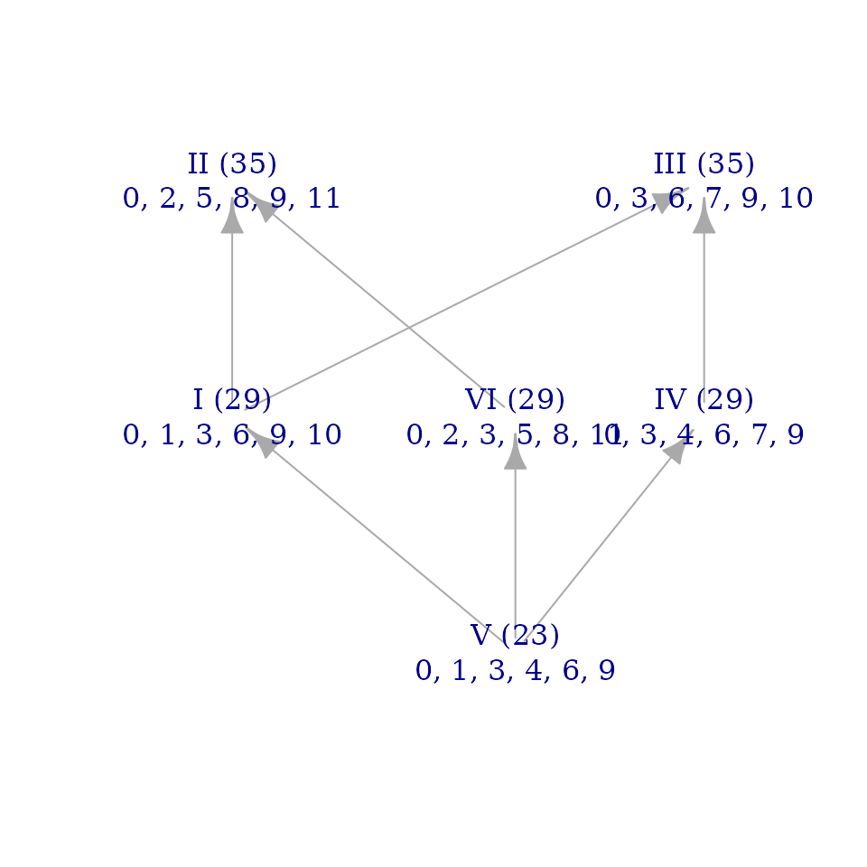

Symmetries of Hyperplane Arrangements and ineqsym()
Source:vignettes/mct_symmetries.Rmd
mct_symmetries.RmdIntroduction
This vignette shows how to use musicMCT to work with the concepts introduced in the paper “Symmetries of the Modal Color Theory Hyperplane Arrangements.” It will introduce relevant tools in an order that roughly corresponds to the paper’s organization. I’ve tried to write it to be accessible for readers coming to musicMCT from “Symmetries,” so it introduces some basic aspects of R syntax that might be useful for applications of the paper.
\(\S 1.2\) Scales, intervals, etc.
R is a 1-indexed language, so the “tonic” of a scale is denoted by \(\hat{1}\) rather than by \(\hat{0}\) as in Definition 1 of “Symmetries.” This is mathematically inconvenient, but at least it aligns well with conventional music theory.
Working in R, generally we will want to consider an n-note periodic scale as represented by a tuple in cpitch\(^n\), along the lines of Definition 3’s discussion. A scale can be entered directly in terms of its pitch content using the following syntax:
blues <- c(0, 3, 5, 6, 7, 10)We will use this six-note blues scale, \((C, E\flat, F, F\sharp, G, B\flat)\), as an example throughout this discussion. There are, however, other ways to specify a scale, such as from its description in terms of its relative step sizes or as a maximally even scale in some cardinality:
double_harmonic <- realize_stepword(c(1, 3, 1, 2, 1, 3, 1))
blackkey_pentatonic <- maxeven(5, 12)
print(double_harmonic)
#> [1] 0 1 4 5 7 8 11
print(blackkey_pentatonic)
#> [1] 0 2 4 7 9We can access an individual scale degree of a scale as follows:
blackkey_pentatonic[3]
#> [1] 4This tells us that \(\hat{3}\) of the familiar pentatonic scale is a major third above the tonic.
The coordinate system denoted by \(\Phi_n\) (Definition 4) is realized by
coord_to_edo(), named because it shifts an input to the
coordinate system where the equal
division of the octave is the origin.
Compare Example 3 to the following code block:
c_major <- c(0, 2, 4, 5, 7, 9, 11)
coord_to_edo(c_major)
#> [1] 0.0000000 0.2857143 0.5714286 -0.1428571 0.1428571 0.4285714 0.7142857
coord_to_edo(blues)
#> [1] 0 1 1 0 -1 0The inverse function is given by coord_from_edo():
cis_diminished <- c(1, 0, -1)
coord_from_edo(cis_diminished)
#> [1] 1 4 7The perfectly even scale which serves as the origin for \(\Phi_n\) can be created with
edoo(), whose name stands for “equal
division of the octave
origin”:
augmented_triad <- edoo(3)
equiheptatonic_scale <- edoo(7)
print(augmented_triad)
#> [1] 0 4 8
print(equiheptatonic_scale)
#> [1] 0.000000 1.714286 3.428571 5.142857 6.857143 8.571429 10.285714
# edoo(n) does look like the origin after applying coord_to_edo():
coord_to_edo(equiheptatonic_scale)
#> [1] 0 0 0 0 0 0 0Given a generic interval \(g\) and a scale degree \(\hat{i}\), the specific interval \(g\) scale steps above \(\hat{i}\) can be calculated as follows:
g <- 2
i <- 4
sim(blues)[g+1, i]
#> [1] 4This tells us that interval spanned by two generic steps above scale
degree \(\hat{4}\) in the
blues scale is 4 semitones large. (Remember that, in R,
scale degrees start from \(\hat{1}\)
rather than \(\hat{0}\).)
\(\S 1.3\) Hyperplane arrangements
For a given \(n\), the hyperplane
arrangement \(\mathcal{M}_n\) described
by Definition 6 can be accessed in R via the function
getineqmat(). The “ineqmat” in the function’s name
abbreviates the phrase inequality
matrix. The hyperplanes of \(\mathcal{M}_n\) are generally referred to
as “inequalities” or ineqs in musicMCT because they are
thought of as representing inequalities in the sizes of scalar
intervals, as described on pp. 17–19 of “Modal Color Theory.”
For instance, the tetrachordal arrangement \(\mathcal{M}_4\) is defined by the following matrix:
tetrachord_arrangement <- getineqmat(4)
print(tetrachord_arrangement)
#> [,1] [,2] [,3] [,4] [,5]
#> [1,] -1 2 -1 0 0
#> [2,] -1 1 1 -1 0
#> [3,] 0 -1 2 -1 0
#> [4,] -2 1 0 1 -1
#> [5,] -1 -1 1 1 -1
#> [6,] -1 0 -1 2 -1
#> [7,] -2 0 2 0 -1
#> [8,] 0 -2 0 2 -1Excluding the last column, each row of the matrix contains the normal vector for some hyperplane \(H^g_{i, j}\). The final column contains constants that translate the hyperplanes so that they intersect at the equal division of the octave. (The package musicMCT is designed to take inputs represented as pitch sets, not using the coordinate system of \(\Phi_n\) where the origin is the equal division of the octave. The matrix needs its last column to make this work.)
Here is Example 5 realized in musicMCT:
dom7 <- c(0, 4, 7, 10)
x <- coord_to_edo(dom7)
hyperplane_v <- tetrachord_arrangement[7, ]
print(hyperplane_v)
#> [1] -2 0 2 0 -1
# Let's leave off the last column:
hyperplane_v <- hyperplane_v[-5]
print(hyperplane_v)
#> [1] -2 0 2 0
# Now we can take the dot product of v and x as in the example:
hyperplane_v %*% x
#> [,1]
#> [1,] 2Although this is not discussed in “Symmetries,” musicMCT has a
function that performs calculations like Example 5, comparing an input
set to all the hyperplanes in \(\mathcal{M}_n\). This function,
signvector() returns only signs (-1,
0, and 1) rather than specific values (like
the value 2 in Example 2). This is because, generally, we only care
about the relative position of a set to a hyperplane, not its absolute
distance. The sign vector for the chord in Example 5 is:
signvector(dom7)
#> [1] 1 1 0 1 1 1 1 0The seventh value in the above sign vector is positive, corresponding
to our observation above that \(\vec{v} \cdot
\vec{x} > 0\). We look at the seventh position in the sign
vector because hyperplane_v happens to be given as the
seventh row in tetrachord_arrangement’s arbitrary ordering
of the hyperplanes.
In Example 4, the hyperplane \(H^2_{0, 3}\) happens to be the twenty-third row in the matrix for \(\mathcal{M}_7\). Thus we can confirm the result \(\vec{v} \cdot \vec{x} = 0\) from Example 4 for the major scale by:
signvector(c_major)[23]
#> [1] 0\(\S 2\) Symmetries of MCT Arrangements
The symmetries of \(\mathcal{M}_n\)
described in this section are realized by the function
ineqsym(). The function’s name is an abbreviation of
inequality-matrix symmetry.
For given \(a\), \(b\), and \(n\), we can use ineqsym() to
realize the linear transformations defined in Definition 8. The value
\(n\) is specified for
ineqsym() by the argument card, since it
determines the cardinality of the scales to be
considered. Given inputs for its arguments a,
b, and card, ineqsym() will
return the permutation matrix \(P_{\pi}\) corresponding to the linear
transformation \(\Pi\). For instance,
here are the permutation matrices from Example 6:
# P_theta:
ineqsym(a=2, b=0, card=5)
#> [,1] [,2] [,3] [,4] [,5]
#> [1,] 1 0 0 0 0
#> [2,] 0 0 0 1 0
#> [3,] 0 1 0 0 0
#> [4,] 0 0 0 0 1
#> [5,] 0 0 1 0 0
# P_psi:
ineqsym(a=2, b=1, card=5)
#> [,1] [,2] [,3] [,4] [,5]
#> [1,] 0 0 1 0 0
#> [2,] 1 0 0 0 0
#> [3,] 0 0 0 1 0
#> [4,] 0 1 0 0 0
#> [5,] 0 0 0 0 1In general, we do not need to work directly with such matrices in R.
ineqsym() can also take a scale directly as an input, with
the argument set, returning the image of the scale under
\(\Pi\). For instance, here are the
transformations of the pentatonic scale from Example 6:
# Using the transformation Theta:
ineqsym(set=blackkey_pentatonic, a=2, b=0)
#> [1] 0.0 2.2 4.4 6.6 8.8
# Using the transformation Psi:
ineqsym(set=blackkey_pentatonic, a=2, b=1)
#> [1] -0.8 2.4 4.6 6.8 9.0If arguments are not explicitly named, ineqsym() assumes
that they are intended as set, a, and
b in that order:
image_of_blues <- ineqsym(blues, 5, 0)
print(image_of_blues)
#> [1] 0 2 3 6 9 11
fortenum(image_of_blues)
#> [1] "6-27"Thus the blues scale (Forte set class 6-47) becomes, under the operation of \(\sigma_{5, 0}\), an instance of set class 6-27.
As suggested by Corollary 2 and its discussion, the linear
transformations created by ineqsym() are
structure-preserving symmetries of \(\mathcal{M}_n\). This means that they
preserve many properties of musical scales. One such property is given
by the function spectrumcount(), which determines how many
distinct sizes each generic interval takes within a scale. For instance,
a scale with “Myhill’s Property” has two specific sizes for each generic
interval. The usual pentatonic and diatonic are two such scales:
spectrumcount(blackkey_pentatonic)
#> [1] 2 2 2 2
spectrumcount(c_major)
#> [1] 2 2 2 2 2 2The list of values returned by spectrumcount() is
preserved, up to reordering, by the action of ineqsym(). We
can see this in the following examples:
spectrumcount(blackkey_pentatonic)
#> [1] 2 2 2 2
spectrumcount(ineqsym(blackkey_pentatonic, 2, 0))
#> [1] 2 2 2 2
spectrumcount(blues)
#> [1] 3 4 5 4 3
spectrumcount(image_of_blues)
#> [1] 3 4 5 4 3By luck, even the order of the values in the above examples are preserved by the transformation. For an instance where a scale’s spectrum count is reordered by the transformation, we can use the melodic minor scale:
melodic_minor <- c(0, 2, 3, 5, 7, 9, 11)
melmin_image <- ineqsym(melodic_minor, 2, 0)
spectrumcount(melodic_minor)
#> [1] 2 2 3 3 2 2
spectrumcount(melmin_image)
#> [1] 3 2 2 2 2 3The melodic minor scale has only 2 sizes of generic second and third (and their inversions: sixths and sevenths), but 3 sizes of fourth and fifth. Its image under the permutation \(\sigma_{2,0}\) similarly has mostly 2 specific sizes for each generic interval, except in this case for its seconds (and sevenths), which come in 3 sizes.
That ineqsym() preserves the values of
spectrumcount() is a consequence of the paper’s observation
that the symmetries in \(\mathcal{P}_n\) always map every instance
of generic interval \(g\) to an
instance of generic interval \(ag\). As
described in “Symmetries,” the symbol \(\mathcal{H}^k_n\) denotes the
subarrangement of \(\mathcal{M}_n\)
consisting of only the hyperplanes associated with the generic interval
\(k\). The function
get_relevant_rows() allows us to define these
subarrangements. The example below demonstrates this for \(n=4\) and \(k=2\), i.e. for generic skips in
tetrachordal scales:
k <- 2
rows_with_skips <- get_relevant_rows(k, tetrachord_arrangement)
print(rows_with_skips)
#> [1] 2 5 7 8
skip_subarrangement <- tetrachord_arrangement[rows_with_skips, ]
print(skip_subarrangement)
#> [,1] [,2] [,3] [,4] [,5]
#> [1,] -1 1 1 -1 0
#> [2,] -1 -1 1 1 -1
#> [3,] -2 0 2 0 -1
#> [4,] 0 -2 0 2 -1Finally, at the end of \(\S 2\), the
operation of scalar involution is mentioned. This, too, can be realized
by ineqsym() using the involution argument.
For instance, the matrix \(-I_5\) for
involutions of pentachords can be gotten by:
ineqsym(card=5, a=1, b=0, involution=TRUE)
#> [,1] [,2] [,3] [,4] [,5]
#> [1,] -1 0 0 0 0
#> [2,] 0 -1 0 0 0
#> [3,] 0 0 -1 0 0
#> [4,] 0 0 0 -1 0
#> [5,] 0 0 0 0 -1Similarly, sets can be directly involuted:
blues_involution <- ineqsym(blues, involution=TRUE)
print(blues_involution)
#> [1] 0 1 3 6 9 10
fortenum(blues_involution)
#> [1] "6-27"
normal_form(blues_involution, optic="optc")
#> [1] 0 1 3 4 6 9
normal_form(image_of_blues, optic="optc")
#> [1] 0 2 3 5 6 9This shows that the scalar involution of the blues scale
belongs to the same set class, 6-27, as the image_of_blues
under \(\sigma_{5,0}\) from above.
However, the two have different OPTC-normal forms (after Hook 2023,
416–18), so they must be related by some \(T_nI\) inversion.
\(\S 3\) Orbits as equivalence classes of scale structure
\(\S 3.1\) Brightness Graphs
The brightness graph of a scale can be sketched in musicMCT using the
function brightnessgraph(). The diagram produced by this
function is a reduced brightness graph, to be contrasted with
the unreduced brightness graph of Definition 10. The former are
a transitive reduction of the latter, removing arrows between nodes when
a directed path between the nodes can be composed from other arrows in
the graph.
We can demonstrate the brightness graphs, and their preservation
under ineqsym(), with the examples from Example 7:
tetrachord_F <- c(0, 2, 4, 7)
tetrachord_G <- c(0, 1, 4, 8)
brightnessgraph(tetrachord_F)
brightnessgraph(tetrachord_G)
These graphs contain extra information about the scale, as described
in “Modal Color Theory,” pp. 7–11. To see just the mathematical graphs
themselves, closer in appearance to Example 7 of “Symmetries,” we can
use arguments to brightnessgraph() as follows:
brightnessgraph(tetrachord_F, show_sums=FALSE, show_pitches=FALSE)
brightnessgraph(tetrachord_G, show_sums=FALSE, show_pitches=FALSE)
Note that the source node at the bottom of each graph is labeled with
the roman numeral for 1, rather than 0 as in Example 7, again because of
R’s 1-indexing. Additionally, the horizontal placement of the graph’s
nodes is arbitrary, so the output of brightnessgraph() does
not exactly match the graphs in Example 7 visually. It is easy to check,
however, that they are isomorphic as graphs.
The voice leadings discussed at the end of the example can be computed in musicMCT as well:
\(\S 3.2\) Well-Formedness
We can begin by testing Proposition 5 for the pentatonic scale and its images, from Example 5 above:
iswellformed(blackkey_pentatonic)
#> [1] TRUE
iswellformed(ineqsym(set=blackkey_pentatonic, a=2, b=0))
#> [1] TRUE
iswellformed(ineqsym(set=blackkey_pentatonic, a=2, b=1))
#> [1] TRUEFunctions composed this way can be annoying to read, so sometimes you
might find R’s “pipe” syntax (see |>()) convenient:
blackkey_pentatonic |> ineqsym(a=2, b=0) |> iswellformed()
#> [1] TRUEThe diatonic scale in 5-limit just intonation is not well-formed, but it is pairwise well-formed (PWF). musicMCT characterizes pairwise well-formedness as part of a broader family it calls “generalized well-formedness” (GWF for short) with 2 degrees of freedom (see “Modal Color Theory,” pp. 26–7):
just_diatonic <- j(dia) # Defined in footnote 7 of "Symmetries"
iswellformed(just_diatonic)
#> [1] FALSE
isgwf(just_diatonic)
#> [1] TRUE
howfree(just_diatonic)
#> [1] 2
# Thus it is pairwise well-formed.
# Like all PWF scales, it is trivalent:
spectrumcount(just_diatonic)
#> [1] 3 3 3 3 3 3As \(\S 3.2\) shows, the values of
iswellformed(set) and
isgwf(set) && howfree(set)==2 are preserved under
ineqsym().
Example 8 demonstrates that two PWF scales need not have isomorphic brightness graphs:
pentachord_F <- c(0, 1, 4, 6, 9)
pentachord_G <- c(0, 2, 3, 5, 7)
brightnessgraph(pentachord_F, show_sums=FALSE, show_pitches=FALSE)
brightnessgraph(pentachord_G, show_sums=FALSE, show_pitches=FALSE)
However, two scales related by a transformation in \(\mathcal{P}_n\) do have isomorphic brightness graphs. For instance:
brightnessgraph(blues)
brightnessgraph(image_of_blues)
This is not discussed in the paper, but scalar involution sends the brightness graph of a scale is sent to its reverse or transpose graph. (The reverse of a directed graph is one in which all the edges and vertices are preserved, but the arrows point in the opposite directions.) We can see this in:
brightnessgraph(blues_involution)
Where the blues scale has a unique maximal node in its brightness
graph, the blues_involution scale has a unique minimal
node, and so on. A proof that involution corresponds to graph reversal
follows straightforwardly from the definitions of involution and
brightness graphs.
Orbits are called “Scale Palettes”
The main premise of \(\S 3\) is that
orbits under \(\mathcal{P}_n\) are
meaningful equivalence classes of scale structure. It is nice,
therefore, to be able to do computations on the full orbit of an scale
under ineqsym(). This is given by the function
scale_palette(), whose name draws on the metaphorical
conceit that each scale structure is a “color,” and therefore a
collection of mutually consistent colors could be called a color
“palette.”
We can compute, for instance, the orbit of the black-key pentatonic scale. This orbit includes 20 distinct scales: 5 modes of 4 distinct well-formed pentatonic structures. Each scale is represented below as a column in a \(5\times 20\) matrix.
pentatonic_palette <- scale_palette(blackkey_pentatonic)
print(pentatonic_palette)
#> [,1] [,2] [,3] [,4] [,5] [,6] [,7] [,8] [,9] [,10] [,11] [,12] [,13] [,14]
#> [1,] 0 0 0 0 0 0.0 0.0 0.0 0.0 0.0 0.0 0.0 0.0 0.0
#> [2,] 2 2 3 2 3 2.2 2.2 2.2 2.2 3.2 1.6 2.6 2.6 2.6
#> [3,] 4 5 5 5 5 4.4 4.4 4.4 5.4 5.4 4.2 5.2 5.2 5.2
#> [4,] 7 7 8 7 7 6.6 6.6 7.6 7.6 7.6 6.8 7.8 7.8 6.8
#> [5,] 9 10 10 9 10 8.8 9.8 9.8 9.8 9.8 9.4 10.4 9.4 9.4
#> [,15] [,16] [,17] [,18] [,19] [,20]
#> [1,] 0.0 0.0 0.0 0.0 0.0 0.0
#> [2,] 2.6 1.8 2.8 1.8 2.8 2.8
#> [3,] 4.2 4.6 4.6 4.6 5.6 4.6
#> [4,] 6.8 6.4 7.4 7.4 7.4 7.4
#> [5,] 9.4 9.2 10.2 9.2 10.2 9.2
apply(pentatonic_palette, 2, iswellformed)
#> [1] TRUE TRUE TRUE TRUE TRUE TRUE TRUE TRUE TRUE TRUE TRUE TRUE TRUE TRUE TRUE
#> [16] TRUE TRUE TRUE TRUE TRUEThe last computation above shows that all 20 scales in this orbit are
indeed well-formed, as we would expect. Of course, the symmetries of the
space preserve many other properties too, like the
evenness() of a scale (defined to be its Euclidean distance
from the perfectly even scale):
apply(pentatonic_palette, 2, evenness) |> round(digits=5)
#> [1] 0.63246 0.63246 0.63246 0.63246 0.63246 0.63246 0.63246 0.63246 0.63246
#> [10] 0.63246 0.63246 0.63246 0.63246 0.63246 0.63246 0.63246 0.63246 0.63246
#> [19] 0.63246 0.63246By default, scale_palette() includes scalar involution
in the transformations that define the orbit. To restrict our
consideration to just the symmetries of \(\mathcal{P}_n\), we can set the argument
include_involution to FALSE. For the
well-formed pentatonic scales just tested, this makes no difference,
because they are symmetrical under inversion (a topic for \(\S 4\)). As an example of a scale where
involution does make a difference, we return to the blues scale:
blues_palette <- scale_palette(blues, include_involution=FALSE)
print(blues_palette)
#> [,1] [,2] [,3] [,4] [,5] [,6] [,7] [,8] [,9] [,10] [,11] [,12]
#> [1,] 0 0 0 0 0 0 0 0 0 0 0 0
#> [2,] 3 2 1 1 3 2 2 1 3 3 2 1
#> [3,] 5 3 2 4 5 5 3 4 6 5 3 3
#> [4,] 6 4 5 6 8 7 6 7 8 6 5 4
#> [5,] 7 7 7 9 10 8 9 9 9 8 6 7
#> [6,] 10 9 10 11 11 9 11 10 11 9 9 10Because 6 is a highly composite number, \(\mathcal{P}_6\) includes relatively few symmetries: just the six modes corresponding to the possible values of \(b\) in \(\sigma_{1, b}\) and the six modes of \(\sigma_{5, b}\). Therefore the palette above includes only 12 scales, representing only two \(T_n\)-types (OPTC-normal forms):
apply(blues_palette, 2, normal_form, optic="optc")
#> [,1] [,2] [,3] [,4] [,5] [,6] [,7] [,8] [,9] [,10] [,11] [,12]
#> [1,] 0 0 0 0 0 0 0 0 0 0 0 0
#> [2,] 2 2 2 2 2 2 2 2 2 2 2 2
#> [3,] 3 3 3 3 3 3 3 3 3 3 3 3
#> [4,] 4 4 4 4 4 4 5 5 5 5 5 5
#> [5,] 7 7 7 7 7 7 6 6 6 6 6 6
#> [6,] 9 9 9 9 9 9 9 9 9 9 9 9We can double the number of scales in the palette if we include involution:
more_blues <- scale_palette(blues, include_involution=TRUE)
print(more_blues)
#> [,1] [,2] [,3] [,4] [,5] [,6] [,7] [,8] [,9] [,10] [,11] [,12] [,13] [,14]
#> [1,] 0 0 0 0 0 0 0 0 0 0 0 0 0 0
#> [2,] 3 2 1 1 3 2 2 1 3 3 2 1 1 2
#> [3,] 5 3 2 4 5 5 3 4 6 5 3 3 3 5
#> [4,] 6 4 5 6 8 7 6 7 8 6 5 4 6 8
#> [5,] 7 7 7 9 10 8 9 9 9 8 6 7 9 9
#> [6,] 10 9 10 11 11 9 11 10 11 9 9 10 10 11
#> [,15] [,16] [,17] [,18] [,19] [,20] [,21] [,22] [,23] [,24]
#> [1,] 0 0 0 0 0 0 0 0 0 0
#> [2,] 3 3 1 2 2 3 1 1 2 3
#> [3,] 6 4 3 3 5 4 2 3 5 5
#> [4,] 7 6 4 5 6 5 4 6 7 8
#> [5,] 9 7 6 8 7 7 7 8 10 9
#> [6,] 10 9 9 11 9 10 9 11 11 10\(\S 4\) Symmetrical Scales
We start by defining the scale from Example 9 and testing that it is fixed by \(\sigma_{4, 3}\).
golomb_ruler <- c(0, 1, 4, 9, 11)
golomb_scale <- convert(golomb_ruler, 15, 12)
coord_to_edo(golomb_scale) |> round(digits=3)
#> [1] 0.0 -1.6 -1.6 0.0 -0.8
golomb_scale
#> [1] 0.0 0.8 3.2 7.2 8.8
ineqsym(golomb_scale, a=4, b=3) |> round(digits=3)
#> [1] 0.0 0.8 3.2 7.2 8.8
# This computation could also be done in 15-tone equal temperament,
# working directly with golomb_ruler and using the "edo" parameter:
coord_to_edo(golomb_ruler, edo=15)
#> [1] 0 -2 -2 0 -1
ineqsym(golomb_ruler, a=4, b=3, edo=15)
#> [1] 0 1 4 9 11As mentioned in the discussion of this example, we can explore the
scales which are fixed by a given symmetry by finding the eigenvectors
of the linear map. R makes this easy. We will call the matrix \(P_{\pi}\) from Example 9 simply
P in the following code block:
P <- ineqsym(card=5, a=4, b=3)
print(P)
#> [,1] [,2] [,3] [,4] [,5]
#> [1,] 0 0 0 1 0
#> [2,] 0 0 1 0 0
#> [3,] 0 1 0 0 0
#> [4,] 1 0 0 0 0
#> [5,] 0 0 0 0 1
eigen(P)
#> eigen() decomposition
#> $values
#> [1] 1 1 1 -1 -1
#>
#> $vectors
#> [,1] [,2] [,3] [,4] [,5]
#> [1,] 0 0.0000000 -0.7071068 0.0000000 0.7071068
#> [2,] 0 -0.7071068 0.0000000 -0.7071068 0.0000000
#> [3,] 0 -0.7071068 0.0000000 0.7071068 0.0000000
#> [4,] 0 0.0000000 -0.7071068 0.0000000 -0.7071068
#> [5,] 1 0.0000000 0.0000000 0.0000000 0.0000000The first three column vectors above correspond to the eigenvalue
1, so any scale which is some linear combination of them
will be fixed by \(P_{\pi}\).
Similarly, the last two column vectors correspond to the eigenvalue
-1. Thus we can define a scale that is sent to its opposite
by this transformation with any linear combination of them:
eigenvector_y <- c(0, -1, 1, 0, 0)
eigenvector_z <- c(1, 0, 0, -1, 0)
eigenscale <- coord_from_edo(eigenvector_y + eigenvector_z)
eigenscale_opposite <- coord_from_edo(-1 * (eigenvector_y + eigenvector_z))
print(eigenscale)
#> [1] 1.0 1.4 5.8 6.2 9.6
print(eigenscale_opposite)
#> [1] -1.0 3.4 3.8 8.2 9.6
ineqsym(eigenscale, a=4, b=3)
#> [1] -1.0 3.4 3.8 8.2 9.6Above, the eigenscale_opposite was defined by
multiplying eigenscale’s coordinate vector (from the \(\Phi_5\) origin) by -1. The
opposite of a scale can also be derived using the
saturate() function, on which see “Modal Color Theory,”
pp. 20–1.
eigenscale_opposite
#> [1] -1.0 3.4 3.8 8.2 9.6
saturate(-1, eigenscale)
#> [1] -1.0 3.4 3.8 8.2 9.6As \(\S 4\) discusses, traditional pitch-class inversion is realizable as a combination of scalar involution and some element of \(\mathcal{P}_n\). We can demonstrate this for the dorian scale, as in Example 10:
dorian <- c(0, 2, 3, 5, 7, 9, 10)
sigma_6_0 <- ineqsym(card=7, a=6, b=0)
inversion <- -1 * sigma_6_0
inversion %*% coord_to_edo(dorian) |> coord_from_edo() |> t() |> as.numeric()
#> [1] 0 2 3 5 7 9 10This simply returns the dorian scale, reflecting dorian’s inversional symmetry about its tonic. We could apply this to achieve \(T_0I\) of a set not fixed by that inversion. For instance, \(T_0I\) should turn a C phrygian scale into C ionian:
phrygian <- c(0, 1, 3, 5, 7, 8, 10)
inversion %*% coord_to_edo(phrygian) |> coord_from_edo() |> t() |> as.numeric()
#> [1] 0 2 4 5 7 9 11Note that these examples both use coord_to_edo() and
coord_from_edo() to switch between coordinate systems.
Another option, which avoids changing coordinates, is to use
ineqsym() and saturate() directly on a set.
For instance, we can invert the blues scale (which is not
inversionally symmetrical) as follows:
inverted_blues <- ineqsym(blues, a=5, b=0) |> saturate(r=-1)
print(inverted_blues)
#> [1] 0 2 5 6 7 9
#| fig.alt: >
#| A so-called clockface diagram for the blues scale. A circle is labeled with
#| twelve numbers, from 0 to 11, along its rim like an analog clock. The numbers that
#| correspond to notes in the blues scale are circled.
clockface(blues)
#| fig.alt: >
#| A clockface diagram for the inversion of the blues scale.
clockface(inverted_blues)Of course, the point of this exercise is to prove that \(T_nI\) transformations belong to a larger family of scalar transformations. If we simply want to invert a set in musicMCT, there is an easier way:
tni(blues, 0)
#> [1] 0 2 5 6 7 9We all know that some sets are inversionally symmetrical. It’s more surprising to learn that a set can be involutionally symmetrical. One example is the “forza del destino” tetrachord \((0, 2, 3, 7)\):
The symmetry applied above sets \(a=1\), which does not permute generic
intervals, and \(b=2\) which will shift
to a new mode of the set. It also sets involution=TRUE,
taking the scalar involution of the forza tetrachord. What
set does this produce?
That is, \(destino = T_3(forza)\)! For this set, involution combines with a mode change to create a chromatic transposition.
As a consequence, the forza tetrachord can also be
inverted without involution:
From the perspective of classical pc-set theory, \((0, 2, 3, 7)\) seems pretty asymmetrical, so I think it’s highly neat that it does turn out to have some symmetry.
Looking for symmetries of a set
How does one discover something like \((0, 2, 3, 7)\)’s symmetry? An easy way is to consider the size of a scale’s orbit. If a scale’s orbit is smaller than the order of \(\mathcal{P}_n\), it must have some symmetry.
For instance, among tetrachords, \(\mathcal{P}_4\) has 8 elements: four values corresponding to \(a=1\) and four for \(a=3\). The size of the orbit doubles to 16 if involution is included. Thus a tetrachord with no symmetries should have 16 “colors” in its “palette,” as does the scale below:
ait <- c(0, 1, 4, 6)
scale_palette(ait, include_involution=TRUE)
#> [,1] [,2] [,3] [,4] [,5] [,6] [,7] [,8] [,9] [,10] [,11] [,12] [,13] [,14]
#> [1,] 0 0 0 0 0 0 0 0 0 0 0 0 0 0
#> [2,] 1 3 2 6 0 4 3 5 5 3 4 0 6 2
#> [3,] 4 5 8 7 4 7 8 5 8 7 4 5 8 5
#> [4,] 6 11 9 10 7 12 8 9 12 7 9 8 11 6
#> [,15] [,16]
#> [1,] 0 0
#> [2,] 3 1
#> [3,] 4 7
#> [4,] 10 9This result has 16 columns, representing 16 distinct scalar “colors,” as expected.
By contrast, the forza tetrachord has only 8 scales in
its orbit:
scale_palette(forza, include_involution=TRUE)
#> [,1] [,2] [,3] [,4] [,5] [,6] [,7] [,8]
#> [1,] 0 0 0 0 0 0 0 0
#> [2,] 2 1 4 5 1 2 5 4
#> [3,] 3 5 9 7 3 7 9 5
#> [4,] 7 10 11 8 8 11 10 7For an example among hexachords, first recall from above that the
blues scale (which has no symmetries under \(\mathcal{P}_6\)) has an orbit of size 24.
Any scale with a smaller orbit must by symmetrical somehow. We’ll
consider the case of set class 6-Z44, to which the “Schoenberg
signature” hexachord belongs:
schbeg <- sc(6, 44)
scale_palette(schbeg) # Only 12 entries
#> [,1] [,2] [,3] [,4] [,5] [,6] [,7] [,8] [,9] [,10] [,11] [,12]
#> [1,] 0 0 0 0 0 0 0 0 0 0 0 0
#> [2,] 1 1 3 1 3 3 3 3 1 3 1 1
#> [3,] 2 4 4 4 6 4 6 4 4 4 2 4
#> [4,] 5 5 7 7 7 5 7 7 5 5 5 7
#> [5,] 6 8 10 8 8 8 10 8 6 8 8 8
#> [6,] 9 11 11 9 11 9 11 9 9 11 9 11
isym(schbeg) # Not inversionally symmetrical
#> [1] FALSE
ineqsym(schbeg, a=5, b=0) # Is symmetrical under this transformation
#> [1] 0 1 2 5 6 9This is a different kind of symmetry from that of forza:
recall that forza was fixed by involution, whereas
schbeg is fixed by \(\sigma_{5,
0}\).
Postscript on \(M_5\) and \(M_7\)
This discussion may lead you to wonder whether our exploration of \(\mathcal{P}_n\) hasn’t simply been a roundabout rediscovery of the pitch-class multiplication operators \(M_5\) and \(M_7\). In a sense, those transformations are of interest here, because they belong to the symmetry group \(\mathcal{P}_{12}\) of the hyperplane arrangement for 12-note scales. Typically, their use in music theory has been as operations that trivially fix the equally tempered chromatic scale (as the perfectly even center \(C_{\mathcal{A}}\) of \(\mathcal{M_{12}}\)) then paying attention to what happens to its subsets.
The perspective offered by the symmetry groups \(\mathcal{P}_n\) is broader, since it applies directly to scale without treating it as a subset of a larger collection. For instance, the \(T_nI\) equivalence class of \((0, 1, 4, 8)\) is fixed under \(M_5\) and \(M_7\), but transformations in \(\mathcal{P}_4\) can turn it into a completely different set class:
set <- c(0, 1, 4, 8)
fortenum(set)
#> [1] "4-19"
(set * 5) %% 12 |> fortenum()
#> [1] "4-19"
(set * 7) %% 12 |> fortenum()
#> [1] "4-19"
set_image <- ineqsym(set, a=3, b=0)
print(set_image)
#> [1] 0 2 4 7
fortenum(set_image)
#> [1] "4-22"To get a sense of what \(M_5\) means from this paper’s perspective, realize that it can apply to any tuning of the 12-note chromatic scale, not just the equal-tempered one. For instance, we could define a tuning of a keyboard’s 12 notes using 5-limit just intonation ratios:
just_chromatic_scale <- j(1, m2, 2, m3, 3, 4, jtt, 5, m6, 6, m7, 7)
print(just_chromatic_scale)
#> [1] 0.000000 1.117313 2.039100 3.156413 3.863137 4.980450 5.902237
#> [8] 7.019550 8.136863 8.843587 10.175963 10.882687Now we can apply \(M_5\) to this—which in the language of “Symmetries” we could call the linear transformation induced by \(\sigma_{5, 0}\):
adjusted_chromatic_scale <- ineqsym(just_chromatic_scale, a=5, b=0)
print(adjusted_chromatic_scale)
#> [1] 0.000000 0.980450 2.175963 3.156413 4.136863 5.117313 5.902237
#> [8] 6.882687 7.863137 8.843587 10.039100 11.019550We can see that these scales are different set classes by calculating their prime forms
primeform(just_chromatic_scale)
#> [1] 0.0000000 0.7067243 1.8240371 2.9413500 3.8631371 4.9804500
#> [7] 5.6871743 6.8044871 7.7262743 8.8435871 9.9609000 10.6676243
primeform(adjusted_chromatic_scale)
#> [1] 0.000000 0.980450 1.960900 2.941350 3.726274 4.706724 5.687174
#> [8] 6.667624 7.863137 8.843587 9.824037 10.804487or by evaluating their interval spectra:
spectrumcount(just_chromatic_scale)
#> [1] 4 3 3 2 3 4 3 2 3 3 4
spectrumcount(adjusted_chromatic_scale)
#> [1] 3 3 3 2 4 4 4 2 3 3 3This shows, for instance, that the just_chromatic_scale
has four distinct sizes of semitone (i.e., four generic step sizes)
whereas the adjusted_chromatic_scale has only three.
Isn’t that something? It’s easy to assume that \(M_5\) and \(M_7\) are intrinsically bound to the system of twelve-tone equal temperament. It’s hard to imagine that they could have any meaning in a continuous pitch space. And yet, they do!
Subsuming the \(M\) transformations under \(\mathcal{P}_{12}\) suggests that it’s wrong to think of \(M_5\) and \(M_7\) as operating on pitch classes per se. That is, these operations are not actions applied to continuous pitch-class space directly (or a special subset of it), like transpositions \(T_n\) are. Instead, they act on the scale degrees of the chromatic scale. That is, if we represent a set as \((x_0, x_1, \ldots, x_n)\), the \(M\) operations act not on the values \(x_i\) but on the indices \(i\).
Last updated: 7 May 2026